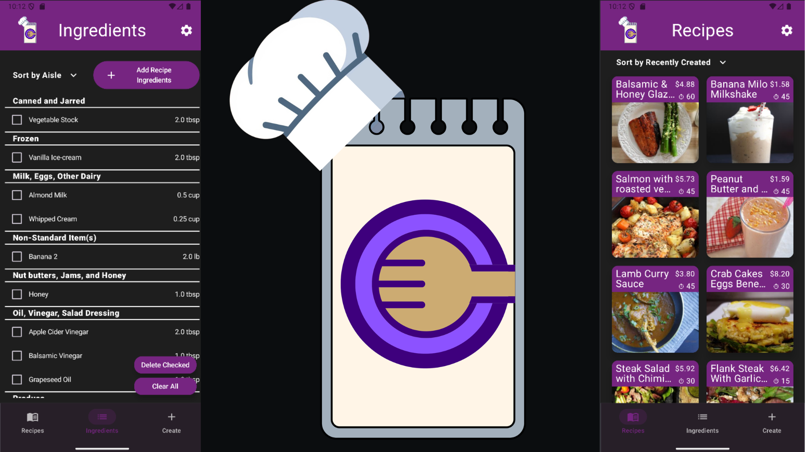
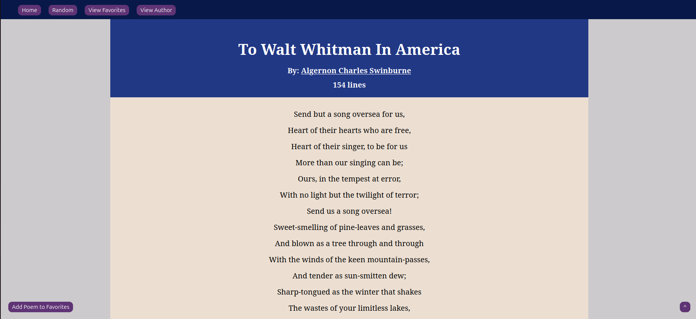
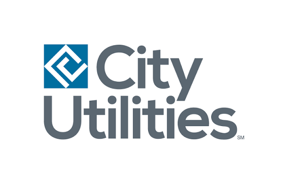

Computer Science student at Missouri State University, graduating Fall 2026. I work as a Software Engineering Intern and Senior Student IT Technician, and spend a good chunk of my time outside of work building things and learning the infrastructure side of software development. My current focus areas are CI/CD pipelines, cloud deployment, self-hosting, and virtualization, with Docker and Linux as my primary playgrounds right now.
Projects

Full-stack recipe app with a Kotlin/Jetpack Compose Android frontend and a TypeScript/Express.js REST API. Integrates the Spoonacular API with MongoDB-backed caching and middleware that enforces per-day API quotas at the database layer.

Flask web app built on the PoetryDB REST API. Browse poems by author, search by title, and save favorites to a local SQLite database.
Skills
Languages
Frameworks & Libraries
Developer Tools
DevOps & Automation
Platforms & Systems
Experience

City Utilities of Springfield
IT Developer Intern
September 2026 - Current
Missouri State University
Senior Student Technician
August 2023 - Current
Digital Monitoring Products
Software Engineering Intern
December 2025 - September 2026
Schreiber Foods
Plant Systems Intern
May 2025 - October 2025
Contact
Finishing my CS degree at Missouri State in Fall 2026 and actively looking for new grad roles in software engineering, DevOps, and IT systems. Feel free to reach out.
Get in touch